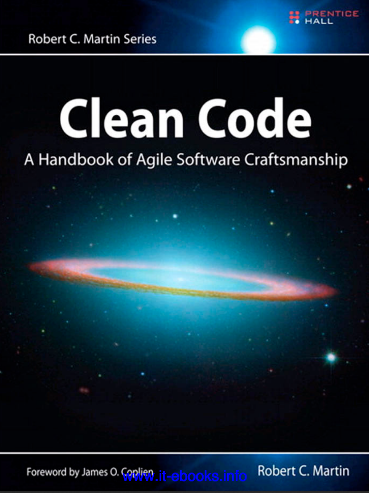
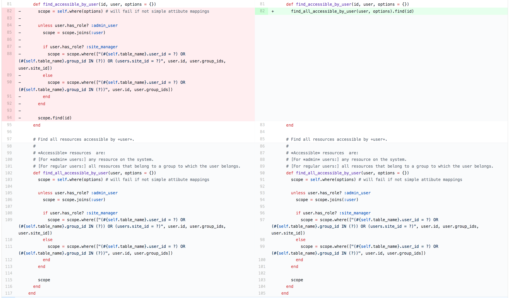
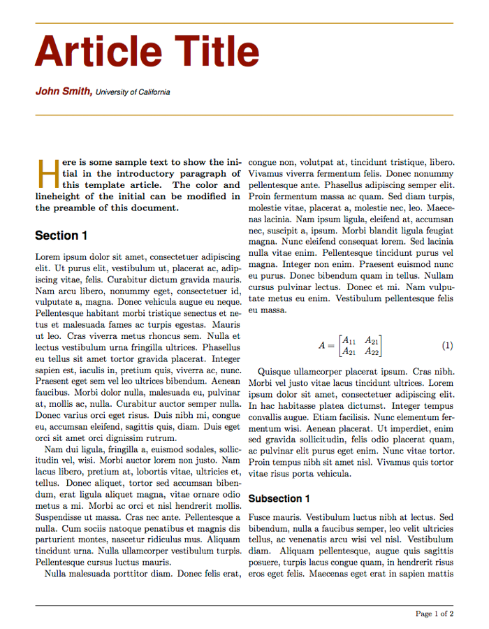

# The DATA_PARAMS array is used to
# whitelist params for filtering.
DATA_PARAMS =
[
:date_attribute,
:absolute_or_relative_from,
:absolute_or_relative_to,
:relative_from,
:relative_to,
:absolute_from,
:absolute_to,
]
Clean Code
Source


xkcd.com
Citations
Of course you have been impeded by bad code. So then—why did you write it?Robert C. Martin
We are authors. And one thing about authors is that they have readers. Indeed, authors are responsible for communicating well with their readers.Robert C. Martin
Any fool can write code a computer can understand. But it takes a good programmer to write code a human can understand.Martin Fowler
Contents
- Names
- Functions/Methods
- Comments
- Form
Names
Descriptive names
- Don't be too quick to choose a name
- Keep them relevant
WHITELIST_FILTERING_PARAMS =
[
:date_attribute,
:absolute_or_relative_from,
:absolute_or_relative_to,
:relative_from,
:relative_to,
:absolute_from,
:absolute_to,
]
Avoid disinformation
- Use plural for a list and singular for a specific item
animals = ["rabbits","dog", "cat"] animals.map { |animal| puts animal } - Avoid names with similar shapes:
-
XYZControllerForEfficientHandlingOfStrings -
XYZControllerForEfficientStorageOfStrings
-
Make meaningful distinctions
- Do not use number series naming e.g. `a1, a2, a3...`
- Do not use noise word like:
UserDataUserInfo
def copy_chars(a1, a2)
a1.each_with_index do |c,i|
a2[i] = c
end
end
def copy_chars(source, destination)
source.each_with_index do |c,i|
destination[i] = c
end
end
Use prononceable names
- Words are by definition, prononceable
- Programming is a social activity
- You should be able to communicate with other developer
# Generate Timestamp as
# year, month, day, hour, minute, and second
def genymdhms
end
# Generate Timestamp as
# year, month, day, hour, minute, and second
def generate_timestamp
end
Use searchable names
- Single-letter names and numeric constants are not easy to locate
- Single-letter names should only be used as local variables inside short methods
- The length of a name should correspond to the size of its scope
weekly_salary = 5 * daily_salary
WORK_DAYS_PER_WEEK = 5
weekly_salary = WORK_DAYS_PER_WEEK * daily_salary
Class Names
- Class and objects should have noun or noun phrase names
- Should not be a verb
- Example:
Customer,Account...
Method Names
- Should have verb or verb phrase names like:
savedelete_page
- In some languages:
- Accesors:
get - Mutators:
set - Predicate:
isorabc? - Bang methods in ruby abc!
st = "This IS a String" st.downcase! puts st > "this is a string"
- Accesors:
Use names associated with a domain
- Use computer science terms, algorithm names, pattern names, math terms
Example:BubbleSort - Use problem domain names
Examples: ORF, amino_acid, protein - Follow conventions, do not invente yours
Use your IDE
- Do not make it hard for the IDE to help you
- Use searchable names
- Do not use same prefix for every identifier
Functions/Methods
Size
- No more than your screen size
- In the 80's it meant ~20 lines
# Model representing a user with normal rights.
# Normal users only have access to resources they own or those
# of projects they are members of.
class NormalUser < User
Revision_info=CbrainFileRevision[__FILE__] #:nodoc:
def available_tools #:nodoc:
Tool.where( ["tools.user_id = ? OR tools.group_id IN (?)", self.id, self.group_ids])
end
def available_groups #:nodoc:
self.groups.where("groups.type <> 'EveryoneGroup'").where(:invisible => false)
end
def available_tasks #:nodoc:
CbrainTask.where( ["cbrain_tasks.user_id = ? OR cbrain_tasks.group_id IN (?)", self.id, self.group_ids] )
end
def available_users #:nodoc:
User.where( :id => self.id )
end
def accessible_sites #:nodoc:
Site.where( :id => (self.site_id || -1) )
end
def visible_users #:nodoc:
User.where("users.type <> 'AdminUser'")
end
end
Nested structure
- Should not be large enough to contain nested structures
- Keep indent level small (1 or 2, max 3)
values = Array.new(10) { rand(-100..100)}
positive_and_pair_values = []
values.each do |value|
if value >= 0
if (value % 2) == 0
positive_and_pair_values << value
end
end
end
values.each do |value|
if value >= 0 && (value % 2) == 0
positive_and_pair_values << value
end
end
values.each do |value|
next if value < 0
next if value % 2 != 0
positive_and_pair_values << value
end
positive_and_pair_values =
values.select { |value| value >= 0 && value % 2 == 0 }
Arguments
- Should have a small number of arguments
- No more than 3 arguments
def distance(x1, y1, z1, x2, y2, z2):
d = math.sqrt(math.pow(x2 - x1, 2) +
math.pow(y2 - y1, 2) +
math.pow(z2 - z1, 2))
print("Distance is ")
print(d)
x1 = 2
y1 = -5
z1 = 7
x2 = 3
y2 = 4
z2 = 5
distance(x1, y1, z1, x2, y2, z2)
class Point:
def __init__(self, x, y, z):
self.x = x
self.y = y
self.z = z
# Function to find distance
def distance(point_1, point_2):
d = math.sqrt(math.pow(point_2.x - point_1.x, 2) +
math.pow(point_2.y - point_1.y, 2) +
math.pow(point_2.z - point_1.z, 2))
print("Distance is ")
print(d)
start_point = Point(2,-5,7)
end_point = Point(3,4,5)
distance(start_point,end_point)
Arguments
- No boolean arguments
def do_something(with_log)
if with_log
# do stuff and record the log
else
# do stuff
end
end
def do_something_with_log
# do stuff and record log
end
def do_something()
# do stuff
end
Function content
- Should do one thing
- They should do it well
- Should only do it
Function content
- Have no side effect
- Should describe everything that a function, variable, or class does
def valid_password?(user, password)
if user.password == password
Session.initialize()
return true
end
return false
end
# Solution 1
def valid_password_and_initialize_session(user, password)
if user.password == password
Session.initialize()
return true
end
return false
end
# Solution 2
Session.initialize() if valid_password?(user, password)
DRY
Dead functions
- Should be discarded
- Do not be afraid
- Your version control system still remenbers them
Iterative process
- Start with a working code
- Then:
- Split your function
- Change names
- Remove duplications
- Re-order your methods
Comments
The proper use of comments is to compensate for our failure to express ourself in code.Robert C. Martin
Good comments
Legal comment
#
# CBRAIN Project
#
# Copyright (C) 2008-2012
# The Royal Institution for the Advancement of Learning
# McGill University
#
# This program is free software: you can redistribute it and/or modify
# it under the terms of the GNU General Public License as published by
# the Free Software Foundation, either version 3 of the License, or
# (at your option) any later version.
#
# This program is distributed in the hope that it will be useful,
# but WITHOUT ANY WARRANTY; without even the implied warranty of
# MERCHANTABILITY or FITNESS FOR A PARTICULAR PURPOSE. See the
# GNU General Public License for more details.
#
# You should have received a copy of the GNU General Public License
# along with this program. If not, see
Explanation of intent
# 1) |----------------| first frame
# |-----------------| second frame
# 2) |----------------| first frame
# |-----------------| second frame
# 3) |---------| first frame
# |-----------------| second frame
# 4) |-----------------| first frame
# |---------| second frame
$isoverlapping = 1 if (($currentframe->{"start"} <= $frame -> {"start"}) and ($currentframe->{"end"} >= $frame -> {"start"}));
$isoverlapping = 1 if (($frame -> {"start"} <= $currentframe->{"start"}) and ($frame -> {"end"} >= $currentframe->{"start"}));
$isoverlapping = 1 if (($frame -> {"start"} <= $currentframe->{"start"}) and ($currentframe -> {"end"} <= $frame->{"end"}));
$isoverlapping = 1 if (($currentframe -> {"start"} <= $frame->{"start"}) and ($frame -> {"end"} <= $currentframe->{"end"}));
Informative comment
die "Unparsable number '$x'\n"
unless $x =~
m/^([\+\-]?) # sign
([\d\.]*) # significand
(?:e(-?\d*))? # exponent
$/x;
Warning of consequence
# Only run this test if you have set aside
# enough memory and time
describe Userfile do
it "Copying file should work with really big file too" do
# ...
end
end
Good comments
- Choose your words
- Use correct grammar and punctuation
- Be brief
Bad Comments
Indicative of bad code
- If you take time to write comments to explain poor code, take time to re write your code
Redundant comments
default_project = current_project || current_user.own_group
# DPs where people can move/copy/extract stuff
writable_dps = writable_data_providers(current_user)
# DPs where people can upload stuff (subset of writable_dps)
uploadable_dps = uploadable_data_providers(current_user)
default_project = current_project || current_user.own_group
writable_dps = writable_data_providers(current_user)
uploadable_dps = uploadable_data_providers(current_user)
Commented out code
if ( ($feature_annot_type eq "G" && $features_who_overlap->[3] eq "YES") # Gene without intron
|| ($feature_annot_type eq "E" && $features_who_overlap->[3] eq "YES")
|| ($feature_annot_type eq "O" && $features_who_overlap->[2]->containStruc)) { # First or last exon
if ($feature_annot_type eq "O" && $features_who_overlap->[2]->containStruc) {
$to_add++;
#push(@$new_sort,$annot)
} elsif ( ( $feature_annot_type eq "G" ) # Gene whithout intron
|| ( ($features_who_overlap->[4] eq "FIRST" || $features_who_overlap->[4] eq "LAST")
&& ( ! ($max_annot < $features_min || $min_annot > $features_max)))) {
my $max_start = ( ( $features_min > $min_annot ) ? $features_min : $min_annot);
my $min_end = ( ( $features_max < $max_annot ) ? $features_max : $max_annot );
$to_add++ if ($overlappingcutoff > ( $min_end - $max_start + 1));
#push(@$new_sort,$annot) if ($overlappingcutoff > ( $min_end - $max_start + 1));
}
}
TO DO comment
# TODO
# Parameters that don't have (yet) options on the command-line
my $EVALUE_THRESHOLD = "1e-11";
Obsolete comments
- Propagate misinformation
- Comments get old quickly
- If you find obsolete comments: update it!
Form
Purpose of formatting
- It is too important to ignore
- It is about communication
- Readability of your code is important
The Stepdown Rule
- Reading code from Top to Bottom
- Important concept go at the top, details go at the bottom 
Vertical alignement
- Use blank lines to separate concepts
- Use them to separate package declarations, import, and functions
- Conceptual affinity, similar concepts should be grouped together
#Model representing user-defined tags.
#
#=Attributes:
#[*name*] A string representing the name of the tag.
#= Associations:
#*Belongs* *to*:
#* User
#*Has* *and* *belongs* *to* *many*:
#* Userfile
class Tag < ActiveRecord::Base
Revision_info=CbrainFileRevision[__FILE__] #:nodoc:
validates_presence_of :name, :user_id, :group_id
validates_uniqueness_of :name, :scope => :group_id
validates_format_of :name, :with => /\A[\w\-\=\.\+\?\!\s]*\z/,
:message => 'only the following characters are valid: alphanumeric characters, spaces, _, -, =, +, ., ?, !'
has_and_belongs_to_many :userfiles
belongs_to :user
belongs_to :group
attr_accessible :name, :user_id, :group_id
api_attr_visible :name, :user_id, :group_id
end
Vertical distance
- Variables should be declared as close to their usage as possible
- Dependant functions should be grouped together
sub GetProteinForGeneWithoutIntrons {
my ($seq, $start, $end, $isMinus) = @_;
# 1. Make hyp prot def by blast
my $g_length = !$isMinus ? $end - $start + 1 : $start - $end + 1;
my $nt_seq = !$isMinus ? uc(substr($seq, $start - 1 , $g_length)) : uc(substr($seq, $end - 1 , $g_length));
$nt_seq =~ tr/ACGT/TGCA/ if $isMinus;
$nt_seq = reverse $nt_seq if $isMinus;
my $protein = "";
foreach (my $i = 0; $i <= length($nt_seq) - 3; $i += 3) {
my $tri_nt = uc (substr($nt_seq, $i , 3));
my $aa = $CODON_TABLE->{$tri_nt} || "X";
$aa = lc($aa) if $tri_nt eq "GTG" && $CODON_TABLE->{$tri_nt} eq "V";
$aa = lc($aa) if $tri_nt eq "TTG";
$protein .= $aa;
}
return $protein;
}
Horizontal density
- Do not make your reader scroll
- Can be used to accentuate certain structure
my ($ProtHMM,$lenHMM) = &CreateFileForHMMBuild($Align,$Introns,$i,$NbChange,$ShortName,$LenAli,$LenAdj_p,$LenAdj_n,$Dash_p,$Dash_n,$More_p,$More_n);
my ($ProtHMM,$lenHMM) = &CreateFileForHMMBuild(
$Align,
$Introns,
$i,
$NbChange,
$ShortName,
$LenAli,
$LenAdj_p,$LenAdj_n,
$Dash_p,$Dash_n,
$More_p,$More_n
);
Thanks!

xkcd.com

xkcd.com

xkcd.com